04 Image Warping and Mosaicing
CS180: Intro to Computer Vision and Computational Photography
Part A.1: Shooting the Pictures
I shot two scenes in my apartment on my phone, rotating the camera in place between shots. The boat set is supplemental, from OpenCV's stitching test data.
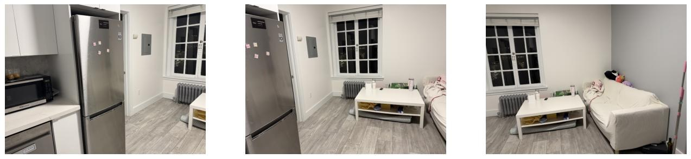
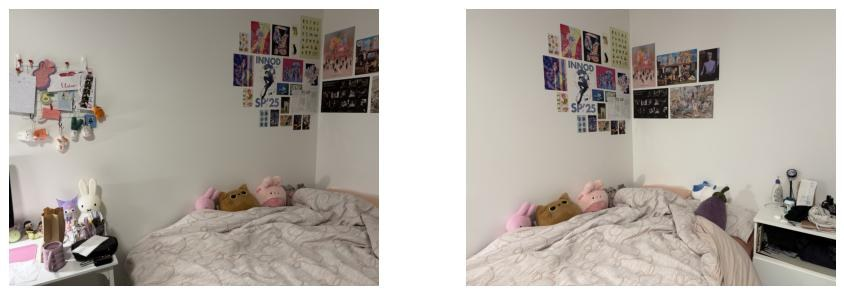
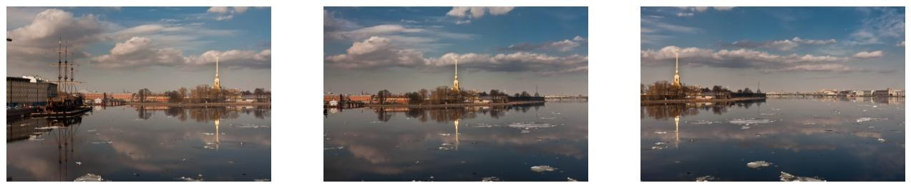
Part A.2: Recovering Homographies
computeH sets h33 = 1, leaving 8 unknowns. Each pair of clicked points
(x, y) → (x', y') gives two equations, so 10 points give a 20 × 8 system Ah = b,
which I solve with least squares.
[x y 1 0 0 0 -x x' -y x'] h = x'
[0 0 0 x y 1 -x y' -y y'] h = y'The system for the first kitchen pair (A | b):
526.4 232.7 1.0 0.0 0.0 0.0 -167.5 -74.1 | 0.3
0.0 0.0 0.0 526.4 232.7 1.0 -126860.6 -56078.8 | 241.0
706.4 101.1 1.0 0.0 0.0 0.0 -157713.2 -22581.0 | 223.3
0.0 0.0 0.0 706.4 101.1 1.0 -74382.0 -10649.8 | 105.3
713.3 573.3 1.0 0.0 0.0 0.0 -212598.9 -170875.4 | 298.0
0.0 0.0 0.0 713.3 573.3 1.0 -435649.4 -350151.1 | 610.7
946.0 559.5 1.0 0.0 0.0 0.0 -494139.2 -292257.2 | 522.4
0.0 0.0 0.0 946.0 559.5 1.0 -522709.3 -309154.9 | 552.6
946.0 451.5 1.0 0.0 0.0 0.0 -486279.7 -232085.9 | 514.1
0.0 0.0 0.0 946.0 451.5 1.0 -429705.3 -205084.7 | 454.2
1020.7 241.0 1.0 0.0 0.0 0.0 -567122.4 -133899.1 | 555.6
0.0 0.0 0.0 1020.7 241.0 1.0 -265787.8 -62753.2 | 260.4
876.7 181.5 1.0 0.0 0.0 0.0 -369347.4 -76443.7 | 421.3
0.0 0.0 0.0 876.7 181.5 1.0 -177299.1 -36695.5 | 202.2
717.5 411.3 1.0 0.0 0.0 0.0 -203901.7 -116893.5 | 284.2
0.0 0.0 0.0 717.5 411.3 1.0 -313001.8 -179438.8 | 436.2
702.3 602.4 1.0 0.0 0.0 0.0 -198600.5 -170366.1 | 282.8
0.0 0.0 0.0 702.3 602.4 1.0 -454167.2 -389599.6 | 646.7
621.9 101.1 1.0 0.0 0.0 0.0 -70818.1 -11516.7 | 113.9
0.0 0.0 0.0 621.9 101.1 1.0 -59459.2 -9669.5 | 95.6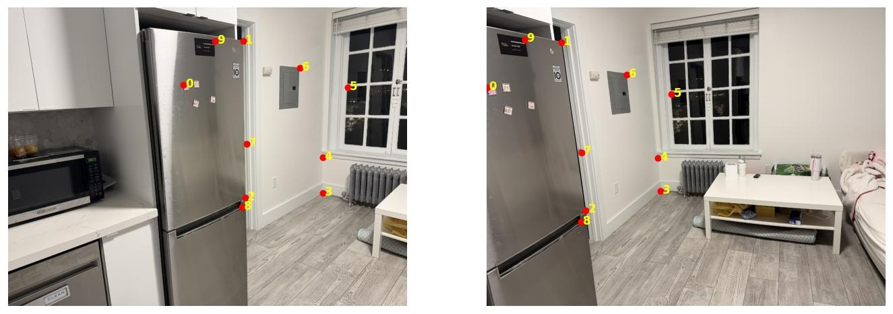
H = [ 2.585 0.2645 -1425
0.3531 2.07 -259.5
0.001265 5.096e-05 1]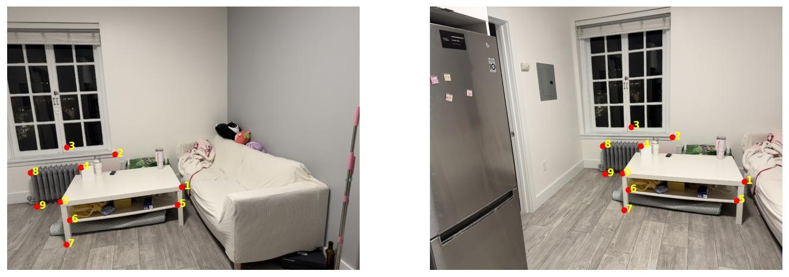
H = [ 0.3636 -0.0005964 562.3
-0.1631 0.8629 0.8459
-0.000551 8.932e-05 1]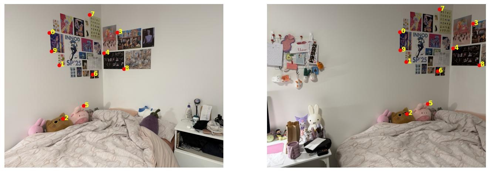
H = [ 0.3521 -0.06708 556.5
-0.173 0.785 55.64
-0.0005133 -2.267e-05 1]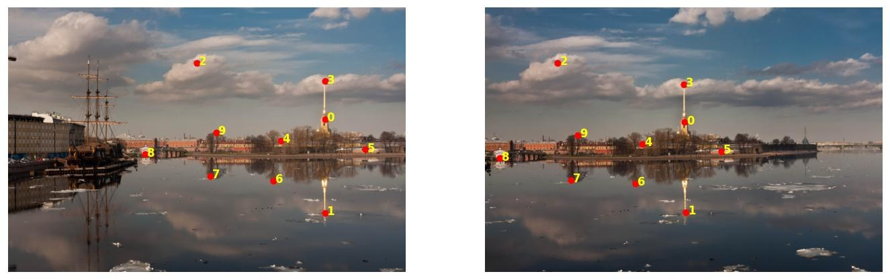
H = [ 1.225 -0.01474 -452.6
0.07882 1.13 -46.65
0.0002108 -4.333e-05 1]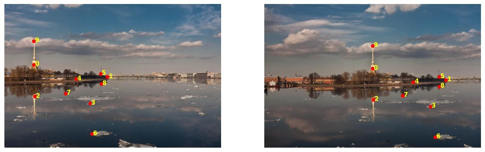
H = [ 0.879 -0.07311 443.5
-0.02223 0.823 62.53
-4.998e-05 -0.0001496 1]Part A.3: Warping the Images
Both warps use inverse warping. The image corners go through H to find the output size, then
each output pixel is mapped back through H−1 and sampled from the source.
Pixels that land outside the source are left empty. warpImageNearestNeighbor rounds
to the closest pixel, and warpImageBilinear takes a weighted average of the four
neighbors.
For rectification I clicked the corners of a 16:9 monitor and a 10 × 8 poster and mapped them to rectangles with those ratios. Nearest neighbor took 36 ms vs 70 ms for bilinear on the monitor, and 14 ms vs 68 ms on the poster. Nearest neighbor is two to five times faster but leaves jagged edges, while bilinear is smoother and slightly blurrier.
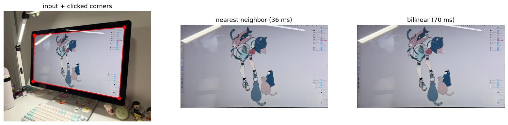
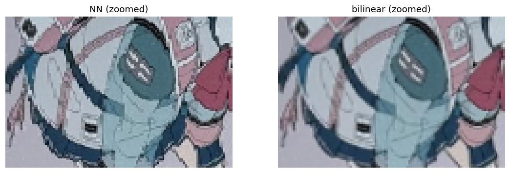
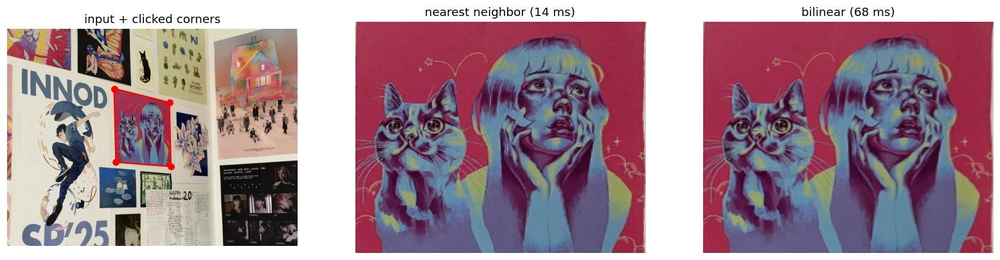
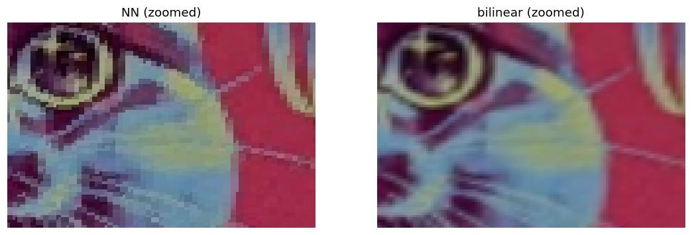
Part A.4: Blending the Images into a Mosaic
One image in each set is the reference (the middle one for the three-image sets) and stays unwarped. The others are warped into its frame with bilinear interpolation, all onto one canvas sized to fit every warped image. Each image gets a weight from the distance transform of its mask, 1 at the center and 0 at the edges.
Overwriting leaves a hard seam, and plain weighted averaging ghosts anything that doesn't line up perfectly. I used a two-band blend: the low frequencies (Gaussian, σ = 4) are a weighted average, and the high frequencies come from whichever image has the largest weight at that pixel.
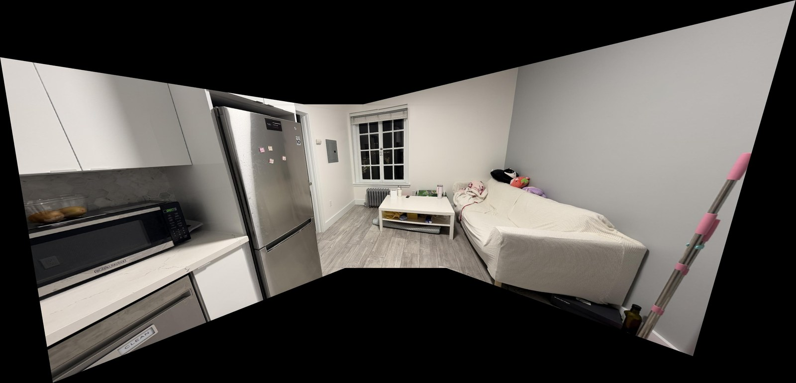
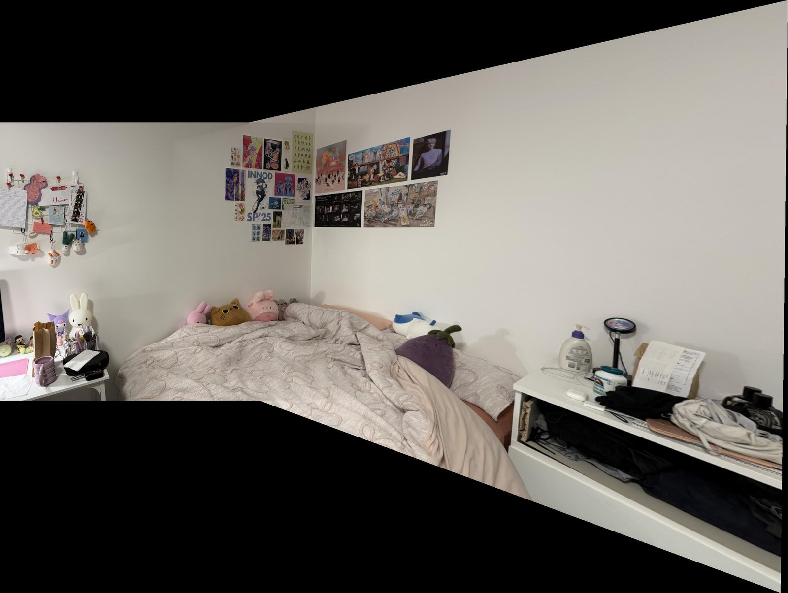
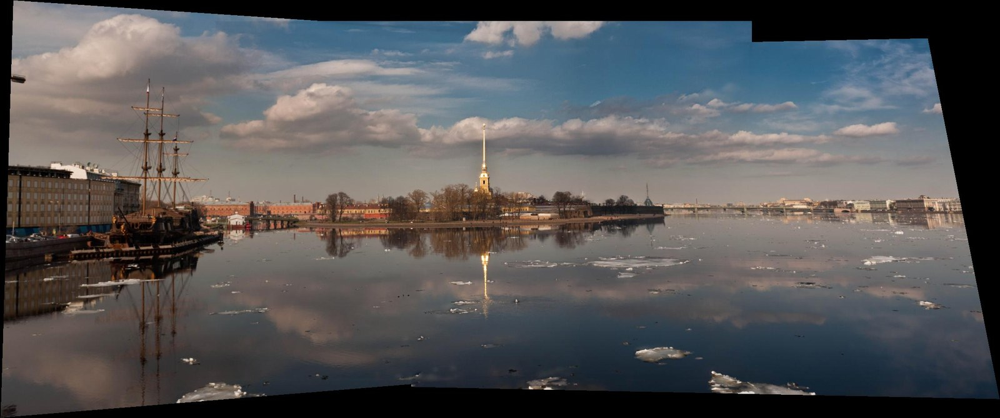
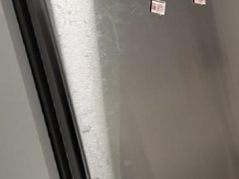
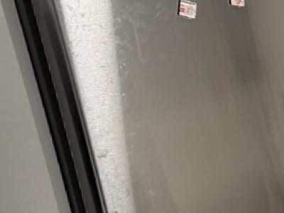
Part B.1: Harris Corner Detection
I used the provided get_harris_corners, which keeps every local maximum of the
corner strength det(M) / trace(M). This gives about 28,000 corners, and the strongest 500
cluster on high-contrast areas like the window and radiator. ANMS keeps the 500 corners whose
nearest significantly stronger corner (fi < 0.9 fj) is farthest away,
which spreads them across the image. To keep the distance matrix small, I only ran ANMS on the
5000 strongest corners.
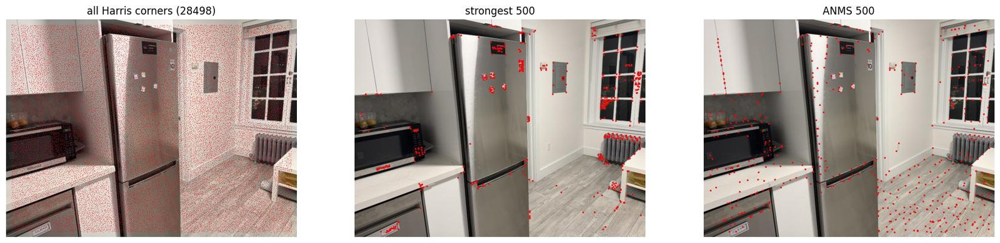
Part B.2: Feature Descriptor Extraction
For each corner I blur the grayscale image (σ = 2), take a 40 × 40 window, and sample every 5th pixel to get an 8 × 8 patch. Each patch is then normalized to mean 0 and standard deviation 1, so brightness and contrast changes between photos don't matter.
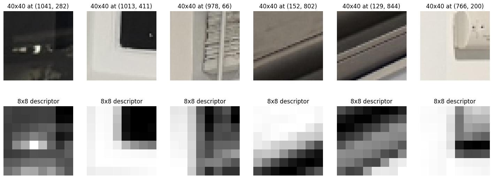
Part B.3: Feature Matching
For each descriptor in the first image I find its nearest and second nearest neighbor in the second image by squared distance, and keep the match only if e1-NN / e2-NN < 0.5. From Figure 6b of the MOPS paper, almost no incorrect matches fall below 0.5. A few wrong matches still pass, mostly on repeated patterns like the window panes.
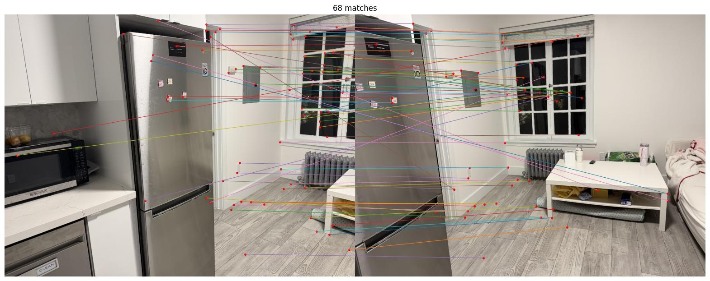
Part B.4: RANSAC for Robust Homography
Each iteration picks 4 random matches, computes H exactly from them with
computeH, and counts the matches that land within 3 px under H. After 1000
iterations I refit H with least squares on the largest inlier set, then warp and blend the
same way as Part A.
The rejected matches on the store set are mostly on the box stack in
front, which shifts slightly between photos because it is closer to the camera.
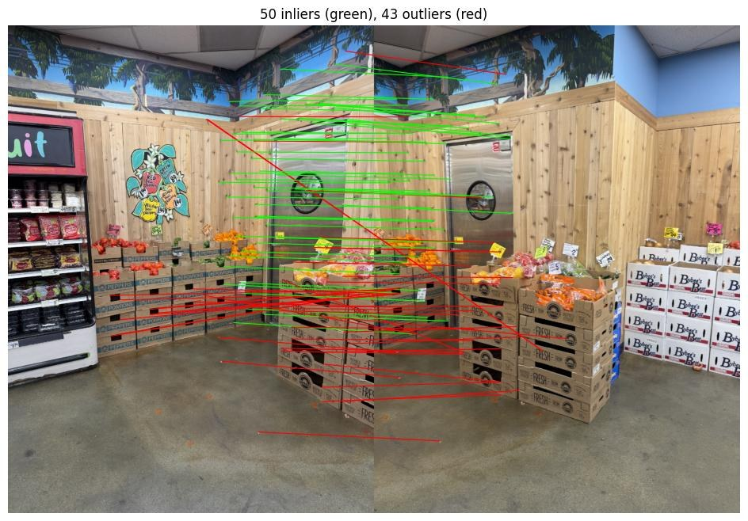
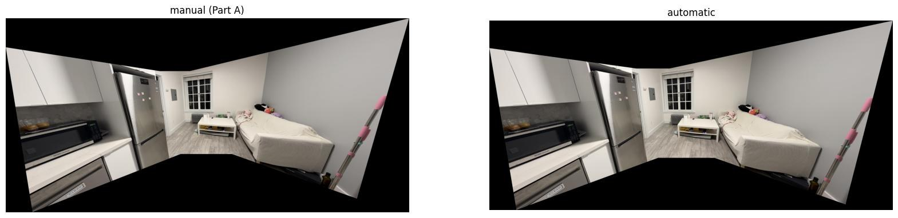
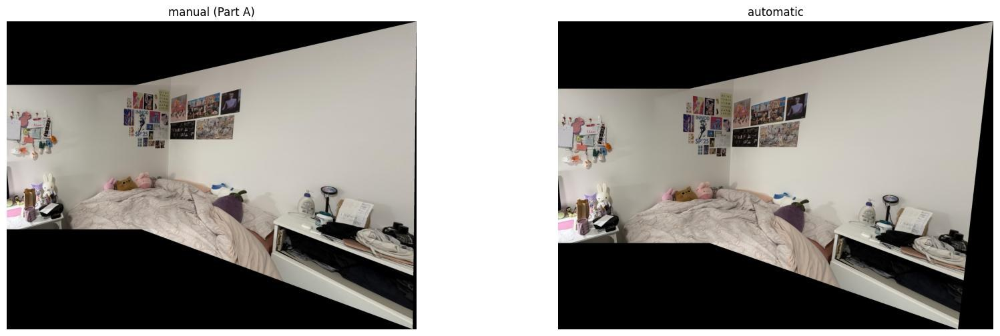
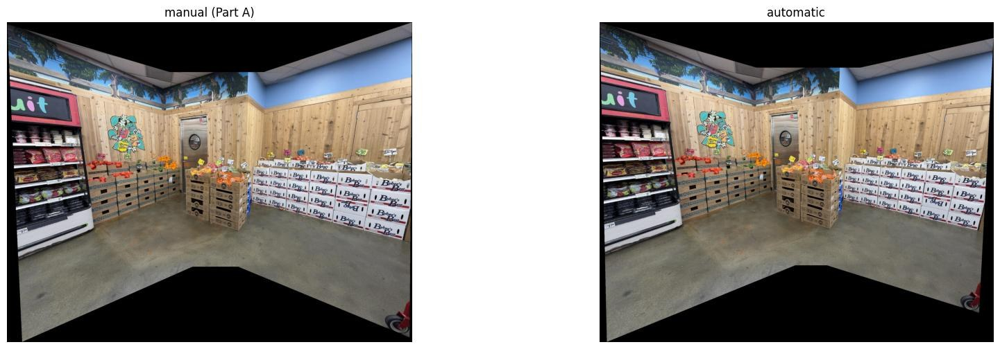